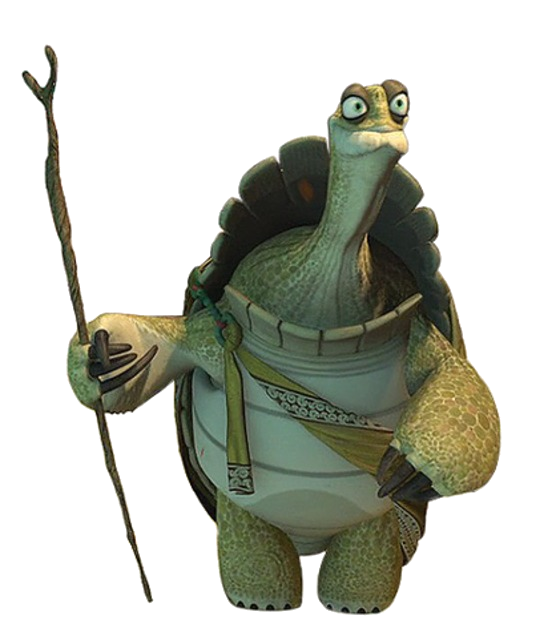

Scroll to journey through today's wisdom. Each screen holds one complete thought.

Daily Brief · Reflective Edition
Ancient calm for modern noise — April 23, 2026
Scroll to journey through today's wisdom. Each screen holds one complete thought.
Quote 1
Even the swift wheels of iron obey the same rhythm of caution, for when divergence is ignored, calamity rides the tracks of the forgotten.
Quote 2
When ink tastes of blood beneath banners of conflict, the storyteller’s voice becomes a double‑edged blade that cuts both hope and memory.
Quote 3
When a master leaves the lantern of command, the sea stretches wide, and new dawns must rise from the shadows cast upon the horizon.
Quote 4
A youthful soul, wandering the bright avenues of fame, reminds us that the brightest melody can still fade to silence when the heart ceases to hum.
Quote 5
The body of a ruler drifts upon the dust of memory, yet the earth still resists the echo of his footsteps until a quiet dialogue is woven.
Quote 6
A saint in a land of sorrow holds his crystal chalice high, yet the ponds of confinement still echo with the clank of unseen shackles.
Quote 7
When the rivers of wealth surge through a kingdom, the law must be stone, lest the currents drown those who cast their nets too shallow.